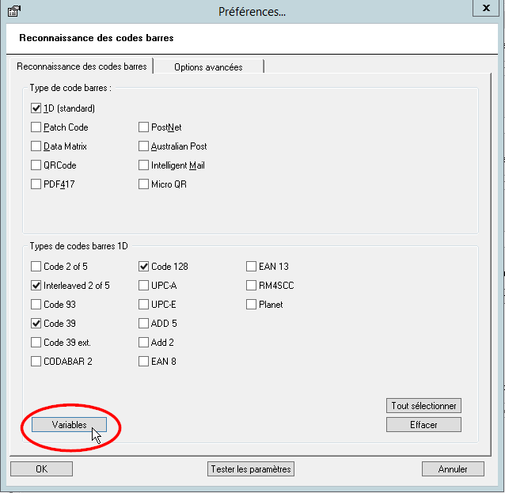
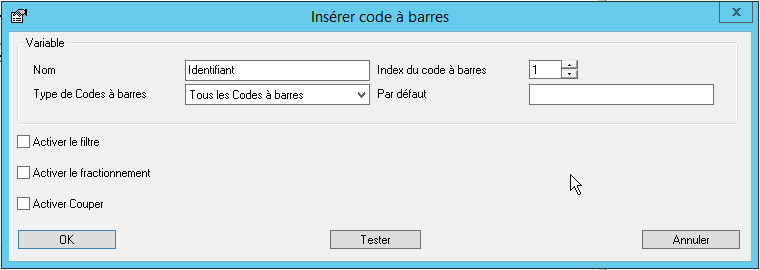
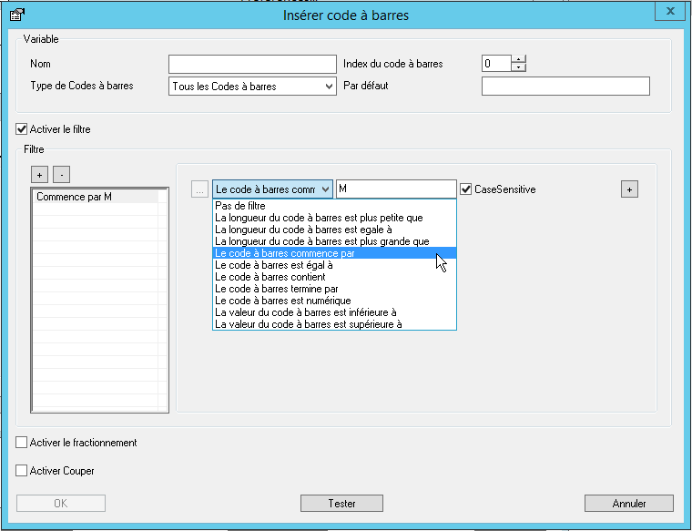
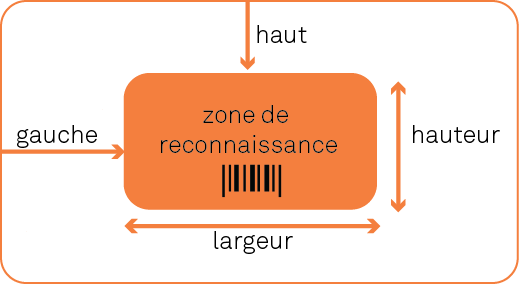

Watchdoc ScanCare - Configurer le module de reconnaissance Codes-Barres
Présentation
La fonction Reconnaissance de codes-barres permet l'analyse, la manipulation et l'extraction des données de n'importe quel code-barre présent sur le document numérisé.
Pour activer la reconnaissance de codes-barres, il est nécessaire que disposer des modules suivants :
-
Scanner Power Tools (SPT) ;
-
Module code-barre.
En règle générale, le code-barre ne contient qu'une valeur telle qu'un numéro de client ou un numéro de commande. Cependant, un code-barre peut aussi contenir plusieurs informations telles qu'un numéro de client, un numéro de commande et une date, en particulier les codes-barre 2D, susceptibles de contenir une quantité importante de données.
Configurer des variables de codes-barres
Principe
Afin d'extraire séparément chaque ensemble de données d'un code-barre, il est possible d'utiliser des variables de code-barre. Vous pouvez générer un nombre illimité de variables de codes-barres, chaque variable constituant un ensemble de données à extraire d'un code-barre.
Une variable de code-barre contient une règle librement définie pour déterminer les données à extraire. Les variables de codes-barres sont conçues pour être exploitées lors de la numérisation dans ScanCare.
Par exemple, la variable permet d'isoler :
-
les 5 premiers caractères du premier code-barre ;
-
un code-barre précis sur une page ;
-
le troisième code-barre sur une page qui en contient plusieurs ;
-
le code-barre commençant par XY et ne comportant pas plus de 10 caractères.
Fonctions permettant l'analyse et l'extraction de données d'un code-barre :
| Fonction | Détail |
| Filtrer | Permet d'exclure les codes-barres dont vous n'avez pas besoin. Un filtre peut donc être une longueur minimale de code-barre, un rang dans le code-barre, par exemple. |
| Séparer | Permet de créer une liste de sous-chaînes à partir d'un caractère de séparation. En utilisant l'élément distinctif, vous pouvez déterminer la chaîne de caractères à conserver dans la variable. |
| Couper | Permet de supprimer une partie du code-barre. |
Procédure
Pour configurer les variables des codes-barres :
-
lancez le programme de configuration de ScanCare ;
-
sélectionnez un profil de numérisation existant ou créez-en un ;
-
rendez-vous dans la section Traitement ;
-
cochez la case Reconnaissance de codes-barres et cliquez sur le bouton Préférences ;
-
activez le type de code-barre que vous souhaitez analyser ;
-
cliquez sur le bouton Variables ;

-
dans la boîte de dialogue qui s'affiche, cliquez sur le bouton Ajouter ;
-
une boîte Insérer un code à barres s'affiche.

-
définissez la variable en utilisant les paramètres suivants :
| Paramètres | Détail |
| Nom | Permet d'attribuer un nom qui identifiera la variable dans l'application Watchdoc ScanCare. Ce nom pourra servir à générer le nom de fichier, mais également dans le fichier d'export CSV ou XML. |
| Type de code à barre |
Permet de sélectionner le type de code-barre : - tous ; - codes à barres de lecture code à barres : codes barres faisant partie intégrante d'un documnet et comportant des données d'identification ; - codes à barres de séparation de documents: code à barres ne faisant pas partie intégrante du document, mais étant ajouté comme séparateur ; |
| Index de code-barre | Permet de préciser quel code-barre analyser dans le cas où il existe plusieurs codes-barres dans la page. L'outil de reconnaissance parcourt les codes-barres de haut en bas et de gauche à droite. |
| Par Défaut | Permet d'indiquer une valeur par défaut appliquée à la variable dans le cas où l'outil n'a extrait aucune valeur après avoir appliqué le filtre, le fractionnement et la découpe. |
-
Activer le filtre : un filtre est un critère ou un ensemble de critères permettant de discriminer un code-barre parmi d'autres. Pour créer un filtre, cochez la case Activer le filtre puis cliquez sur le bouton pour le définir :
- dans la boîte Ajouter un filtre, attribuez un nom explicite au filtre ;
- cliquez sur le bouton
- concevez la condition correspondant au filtre souhaité (par exemple, "le code à barres commence par..." M (cochez CaseSensitive si la majuscule doit être prise en compte) ;

-
Activer le fractionnement : cette fonction permet de fractionner le code-barres en plusieurs chaînes de caractères à partir d'un caractère de fractionnement défini afin de ne tenir compte que d'une partie du code-barre dans la variable. Pour activer le fractionnement, cochez la case et définissez :
- Caractère de fractionnement : indiquez le caractère qui constitue le caractère de fractionnement dans la chaîne de caractères du code-barre.
- Index des éléments : indiquez le numéro de la chaîne de caractères qui doit être prise en compte dans la variable après fractionnement. Par exemple, si le caractère de fractionnement est présent 3 fois dans la chaîne, il crée 4 chaînes de caractères distinctes. En Index, saisissez le chiffre 1 si la première séquence est celle dont il faut tenir compte dans la variable.
-
Activer Couper : cette fonction permet d'extraire une partie du code-barree, en tenant compte d'une position de départ ou d'une chaîne de caractères précédant les données à extraire et d'une longueur.
- Décalage : si les caractères à prendre en compte dans la variable occupent toujours la même place, indiquez la position, dans la chaîne de caractères, à partir de laquelle les caractères doivent être extraits ;
- Chaîne de décalage : si les caractères à prendre en compte dans la variable sont toujours situés après une chaîne de caractères spécifique, cochez la case et indiquez dans le champ la valeur après laquelle les caractères doivent être extraits. Complétez ce paramétrage en indiquant la longueur de la valeur à exploiter dans la variable. Par exemple, Chaîne de décalage = REF et longueur = 7 permet d'extraire les 7 caractères suivants la chaîne de caractères REF figurant dans le code-barres.
Configurer les options avancées de la reconnaissance de codes-barres
ScanCare dispose de plusieurs options permettant d'optimiser la reconnaissance des codes-barres. De plus, vous pouvez préciser que vous souhaitez la recherche sur les codes-barres verticaux en exclusivité.
Pour configurer les options avancées :
-
lancez le programme de configuration de ScanCare ;
-
sélectionnez un profil de numérisation existant ou créez-en un ;
-
rendez-vous dans la section Traitement ;
-
activez la fonction Reconnaissance de codes-barres et cliquez sur le bouton Préférences ;
-
rendez-vous sous l'onglet "Options avancées" ;
-
utilisez les paramètres disponibles :
| Paramètres | Détail |
| Image du paramètre Range |
Cette boîte permet de définir les paramètres pour exclure certains codes-barres de l'analyse en déterminant leur position dans la page. Les valeurs Left Gauche et Top Haut déterminent le point de départ de la zone de reconnaissance qui est précisée par les valeurs Height Hauteur et Width Largeur. Par ailleurs, vous devez définir l'unité de mesure de ces valeurs.
 Par exemple, si vous ne souhaitez extraire que 3 codes-barres d'un document qui en comporte 5, déterminez précisément les zones dans lesquelles se trouvent les 3 codes-barres à analyser. Note: Watchdoc ScanCare commence la recherche des codes-barres à partir de la première page du document et depuis le coin gauche. |
| Couleur | Permet de préciser la couleur du code-barre. |
| Nombre max. | Permet de définir le nombre maximal de codes-barres à extraire d'un document. |
| Autoriser le pré-traitement |
Permet l'activation du pré-traitement de l'image avant l'analyse de codes-barres. - cochez la case Activer le pré-traitement ; - cliquez sur le bouton Préférences ; - configurez les fonctions de traitement (cf. chapitre Traitement de l'image) ; - cliquez sur OK pour valider la configuration. Note : cette fonction ne concerne que l'analyse du code-barre et n'a rien à voir avec le traitement de l'image lui-même. |
| Distance | Permet de définir la distance entre les barres du code. |
| Export | Permet d'exporter les valeurs (base 64) des codes-barres vers un fichier CSV ou XML. |
| Direction | Permet de définir la direction de lecture du code-barre. Optez pour le mode de lecture à adopter en fonction des types de codes-barres à lire. |
| Additional analysis |
Permet de : - rogner la zone avant de tenter une nouvelle analyse ; - élargir la zone avant de tenter une nouvelle analyse. |
-
cliquez sur OK pour confirmer votre configuration.
Pour vérifier que les options avancées sont correctement configurées,
-
cliquez sur le bouton Tester les paramètres ;
-
sélectionnez un document sur lequel mener le test et cliquez sur le bouton Ouvrir ;
-
cliquez sur le bouton Démarrer ;
-
vérifiez que les valeurs extraites du code-barre correspondent aux paramètres fixés.